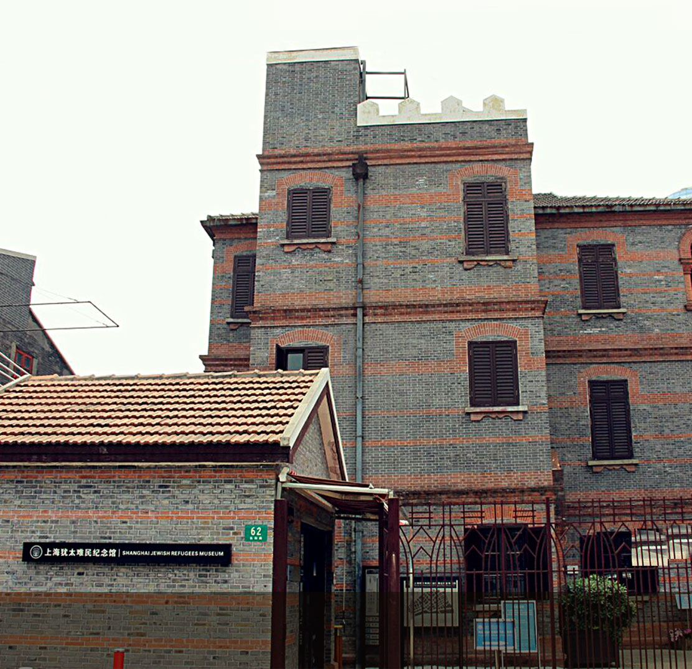

纪念馆
上海犹太难民
SHANGHAI JEWISH REFUGEES MUSEUM
海犹太难民纪念馆位于虹口区长阳路62号（原华德路62号），由摩西会堂旧址、两个新展示厅、一个中庭小广场和一面名单墙组成。是“提篮桥历史文化风貌区”的重要组成部分，旨在见证和纪念犹太人避难上海的这段历史。
-

摩西会堂旧址
MOSE HALL SITE
1928年由俄罗斯犹太人修建
-
二号三号 展示厅
THREE NO,TWO EXHIBITION HALL
2015年8月重新布展
-
名单墙
LIST WALL
刻有13732个犹太难民的名字
-
白马咖啡馆
WHITE HORSE CAFE
1939年由鲁道夫·莫斯伯格开办
上海犹太难民纪念馆简介
SHANGHAI JEWISH REFUGEES MUSEUM
- 
上海犹太难民纪念馆1
上海犹太难民纪念馆2
上海犹太难民纪念馆3
从二十世纪初至二十世纪三、四十年代，为了逃离反犹浪潮和纳粹的疯狂迫害，成千上万的犹太人逃亡上海避难。据统计，从1933年到1941年，上海先后接纳了约3万名来自德国及德占各国的犹太难民，除数千人经上海去了第三国外，大部分难民选择留在这里。1943年2月，日本占领当局宣布建立“无国籍难民限定居住区”，强行把1937年及之后来沪的犹太难民迁入虹口提篮桥地区一个不足一平方英里的地方。当时这里已经有约10万中国居民！在艰苦的岁月

摩西会堂旧址
MOSE HALL SITE
摩西会堂旧址是上海仅存的两座犹太会堂旧址之一，1928年由俄罗斯犹太人修建，二战期间是在沪犹太难民们经常聚会和举行宗教仪式的场所，2004年被列为上海市优秀历史建筑。以色列前总理拉宾在1994年参观时留言感谢“第二次世界大战时上海人民卓越无比的人道主义壮举”。
Exhibition Hall
二号展示厅
TWO EXHIBITION HALL
于2007年底建成，2015年8月重新布展。展厅内介绍二战历史的电影短片配合情景雕塑等艺术品，清晰地展现了犹太难民从欧洲逃亡到上海的历程。此外还展有船票、难民护照和报纸等实物，生动还原了犹太人在上海的这段历史。刻有拉宾题词的大型石碑再次提醒游客们，危急时刻建立的民族友谊，永远会被铭记。
三号展示厅
THREE EXHIBITION HALL
于2008年5月建成，2015年8月重新布展。主要展出虹口隔都内，犹太难民和上海邻居的生活故事。内容丰富的短片配合多件实物展品，展现出隔都内的恶劣情况，以及上海人和犹太人的深厚情谊。

ATRIUM PLAZA 中庭小广场
中庭小广场是拍照留影、驻足欣赏摩西会堂旧址建筑风貌的好地方
名单墙
白马咖啡厅
WHITE HORSE CAFE
开业于1939年，由从维也纳逃亡到上海的犹太人鲁道夫·莫斯伯格一家租住了一栋三层带阁楼的建筑开办而成，是当时犹太难民日常聚集的场所。
活动概述
SUMMARY OF ACTIVITIES
自2007年重新修缮并对外开放以来，上海犹太难民纪念馆与有关国家驻沪总领事馆和相关机构进行了富有成效的合作与交流，联合举办了内容丰富、形式多样的各种活动。2015年是中国人民抗日战争暨世界反法西斯战争胜利70周年，纪念馆对内部展陈进行了重新布置，启动了“上海名单墙”，并且开放了白马咖啡馆这一新建纪念设施。
纪念馆自2011年开始在世界各地进行巡回展览。自2011年以来，纪念馆曾先后在德国、以色列、美国、匈牙利、澳大利亚和马耳他等多个国家举办展览并产生重大反响。此外，常有犹太家庭选择在摩西会堂旧址举行子女的成人仪式与犹太婚礼。